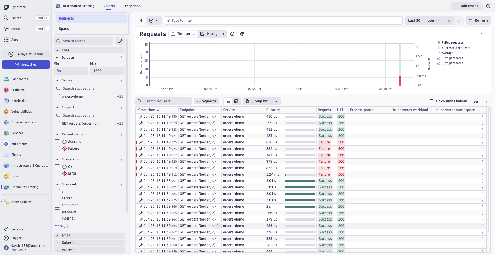
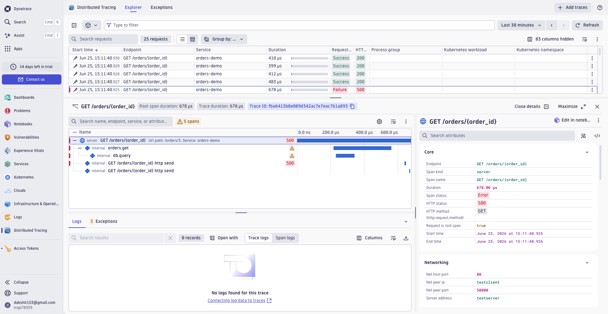

A small app built to break, and be found
Faultline is a small demo app I built. It uses OpenTelemetry (the standard way an app reports what it's doing) to send its activity into Dynatrace, a monitoring tool. Flip one switch and one step inside the app, a database call, starts failing. In Dynatrace that exact broken step shows up on its own. Nobody has to go hunting for where it went wrong.
When an app is running live, you usually can't see inside it. A request comes in, something is slow or breaks, and all the user sees is "checkout is down," with no clue why. Observability means making each step of the app report what it did, so that black box turns into a timeline you can actually read. Faultline is the smallest honest version of that: a real little app, real reporting, a real monitoring backend, and a switch to break it whenever you want so you can watch the problem get caught.
Every request becomes a trace: a timeline of what happened. Each step in it is a span, one timed piece of work. Here a request has three: handling the request, the database lookup inside it, and one follow-on call.
Healthy. The lookup returns the order and the request succeeds.
The database step stalls for about two seconds. A slowness problem, not a full outage.
The database step fails, the request comes back as an error (HTTP 500), and the trace records exactly where it broke.
# make the database step fail curl -X POST localhost:8799/admin/fault -d '{"mode":"error"}' curl localhost:8799/orders/1 # -> HTTP 500, recorded in the trace # put it back curl -X POST localhost:8799/admin/fault -d '{"mode":"none"}'
The same app runs on your laptop or sends its data to a real monitoring tool, with no code change. It just reads a few standard settings: point them at Dynatrace and the data flows there; leave them blank and it runs locally and sends nothing. Being able to switch the destination with settings instead of code is the whole point of OpenTelemetry, and it means a customer is never locked into one vendor.
def configure() -> TracerProvider: resource = Resource.create({"service.name": "orders-demo"}) provider = TracerProvider(resource=resource) # Only send the data to a monitoring tool (e.g. Dynatrace) when a destination is set. if os.getenv("OTEL_EXPORTER_OTLP_ENDPOINT"): provider.add_span_processor(BatchSpanProcessor(OTLPSpanExporter())) trace.set_tracer_provider(provider) return provider
Here it is running in a real Dynatrace account. The app shows up on its own, with both healthy and failing requests. Open a failing one and the database step is marked as the cause, without anyone telling Dynatrace where to look.

The orders-demo app in Dynatrace. Each row is a real request; the red ones are the failures created by flipping the break button to error.

The same request, opened up. The db.query step (the database lookup) carries the error, and the request never reaches shipping. That's the exact failing step, found automatically, not guessed.
Faultline is a deliberately tiny demo, not a real production system. Its job is to make one thing concrete: the exact loop a Solutions Engineer walks a customer through.
Set up an app to report what it's doing, send it some traffic, break a step, and find it in seconds instead of hours. That's the demo an SE walks a customer through.
No real database, no real shipping service. The point isn't size; it's showing how a failure becomes visible the moment an app reports what it's doing.
The data goes to an actual Dynatrace account, and the screenshots above are from that live account, not a mock-up.
The Dynatrace side is a free trial, and the access key lives only in a local .env file that is never uploaded to the public code.